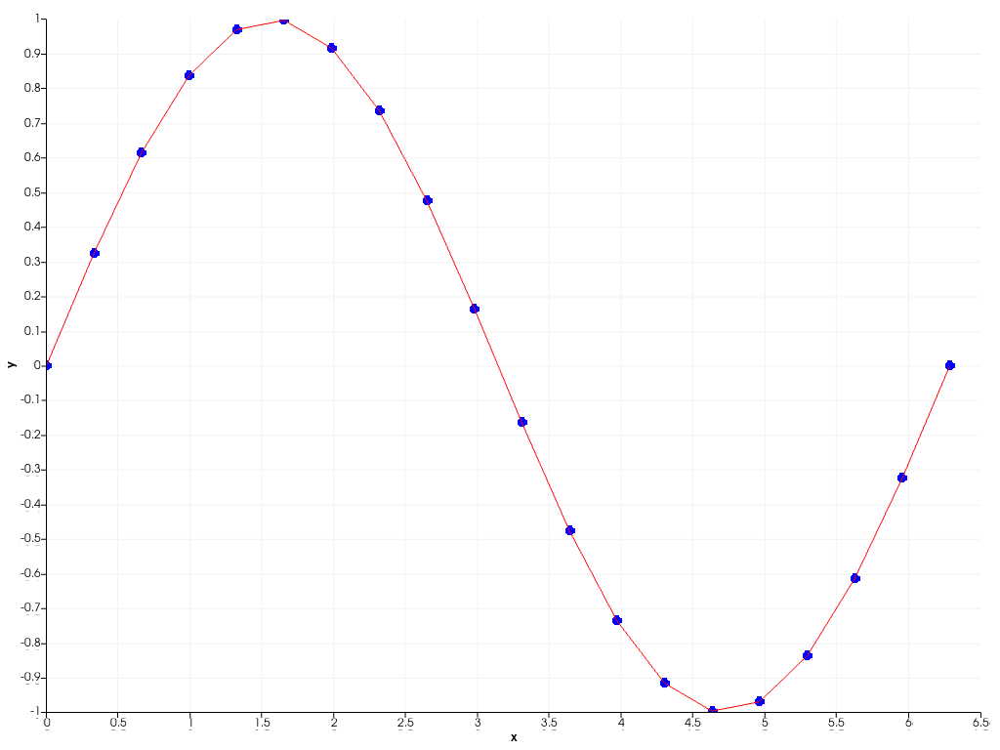

pyvista.Chart2D¶
- class Chart2D(size=(1, 1), loc=(0, 0), x_label='x', y_label='y', grid=True)¶
matplotlibの図に似た2Dチャートクラスです．- パラメータ
- size :
listかtuple,optionalpython:list か python:tuple, optional 正規化された座標におけるチャートのサイズです．サイズが
(0, 0)の場合は不可視で，(1, 1)の場合はレンダラーの幅と高さをすべて占めます．- loc :
listかtuple,optionalpython:list か python:tuple, optional 正規化された座標におけるチャートの位置（左下隅）です．
(0, 0)という位置はレンダラーの左下に相当し，(1, 1)という位置はレンダラーの右上に相当します．- x_label
str,optional x軸のラベルです． デフォルトは
'x'です．- y_label
str,optional y軸のラベルです． デフォルトは
'y'です．- gridbool,
optional プロットに背景のグリッドを表示します． デフォルトは
Trueです．
- size :
例
単純な正弦波を散布図と折れ線図にプロットします．
>>> import pyvista >>> import numpy as np >>> x = np.linspace(0, 2*np.pi, 20) >>> y = np.sin(x) >>> chart = pyvista.Chart2D() >>> _ = chart.scatter(x, y) >>> _ = chart.line(x, y, 'r') >>> chart.show()
 複数の種類のプロットを1つのチャートにまとめることができます．
>>> rng = np.random.default_rng(1) >>> x = np.arange(1, 8) >>> y = rng.integers(5, 15, 7) >>> e = np.abs(rng.normal(scale=2, size=7)) >>> z = rng.integers(0, 5, 7) >>> chart = pyvista.Chart2D() >>> _ = chart.area(x, y-e, y+e, color=(0.12, 0.46, 0.71, 0.2)) >>> _ = chart.line(x, y, color="tab:blue", style="--", label="Scores") >>> _ = chart.scatter(x, y, color="tab:blue", style="d") >>> _ = chart.bar(x, z, color="tab:orange", label="Violations") >>> chart.x_axis.tick_locations = x >>> chart.x_axis.tick_labels = ["Mon", "Tue", "Wed", "Thu", "Fri", ... "Sat", "Sun"] >>> chart.x_label = "Day of week" >>> chart.show()

メソッド
Chart2D.area(x, y1[, y2, color, label])このチャートに面チャートを追加します．
Chart2D.bar(x, y[, color, orientation, label])このチャートにバープロットを追加します．
Chart2D.clear([plot_type])このチャートから，指定されたタイプのプロットをすべて削除します．
Clean up the chart.
このチャートのx-軸とy-軸を隠します．
Chart2D.line(x, y[, color, width, style, label])このチャートにラインプロットを追加します．
Chart2D.plot(x[, y, fmt])Matplotlibのようなプロットメソッド．
Chart2D.plots([plot_type])このチャートで指定されたタイプのすべてのプロットを返します．
Chart2D.remove_plot(plot)このチャートから与えられたプロットを削除します．
Chart2D.scatter(x, y[, color, size, style, ...])このチャートに散布図を追加します．
Chart2D.show([off_screen, full_screen, ...])このチャートを自作のプロッターに表示します．
Chart2D.stack(x, ys[, colors, labels])このチャートにスタックプロットを追加します．
チャートの表示を切り替えます．
アトリビュート
チャートの背景色を返すか設定します．
チャートの背景テクスチャーを返すか設定します．
チャートの境界線色を返すか設定します．
チャートの境界線スタイルを返すか設定します．
チャートの境界線幅を返すか設定します．
チャートグリッドを有効または無効にします．
チャートの凡例の可視性を返すか設定します．
正規化された座標でチャートの位置を返す，または設定します．
正規化された座標でチャートのサイズを返す，または設定します．
チャートのタイトルを返すか設定します．
チャートの見え方を返すか設定します．
このチャートの水平方向(x)の
Axisを返します．このチャートのx軸のラベルを返すか設定します．
このチャートのx軸のレンジを返すか設定します．
このチャートの垂直方向(y)の
Axisを返します．このチャートのy軸のラベルを返すか設定します．
このチャートのy軸のレンジを返すか設定します．